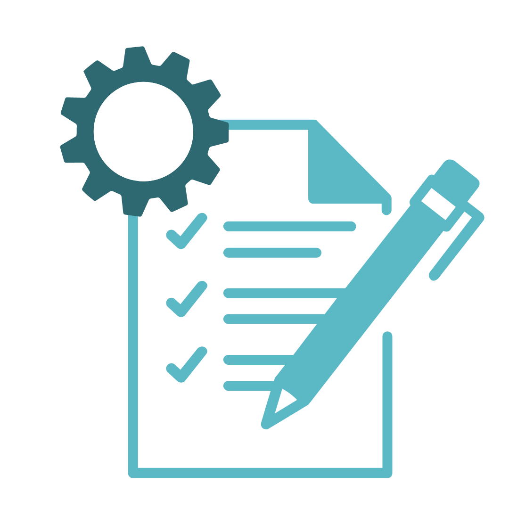
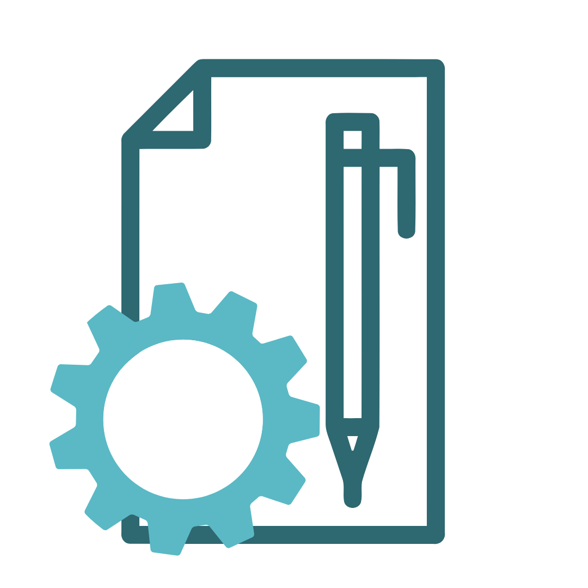
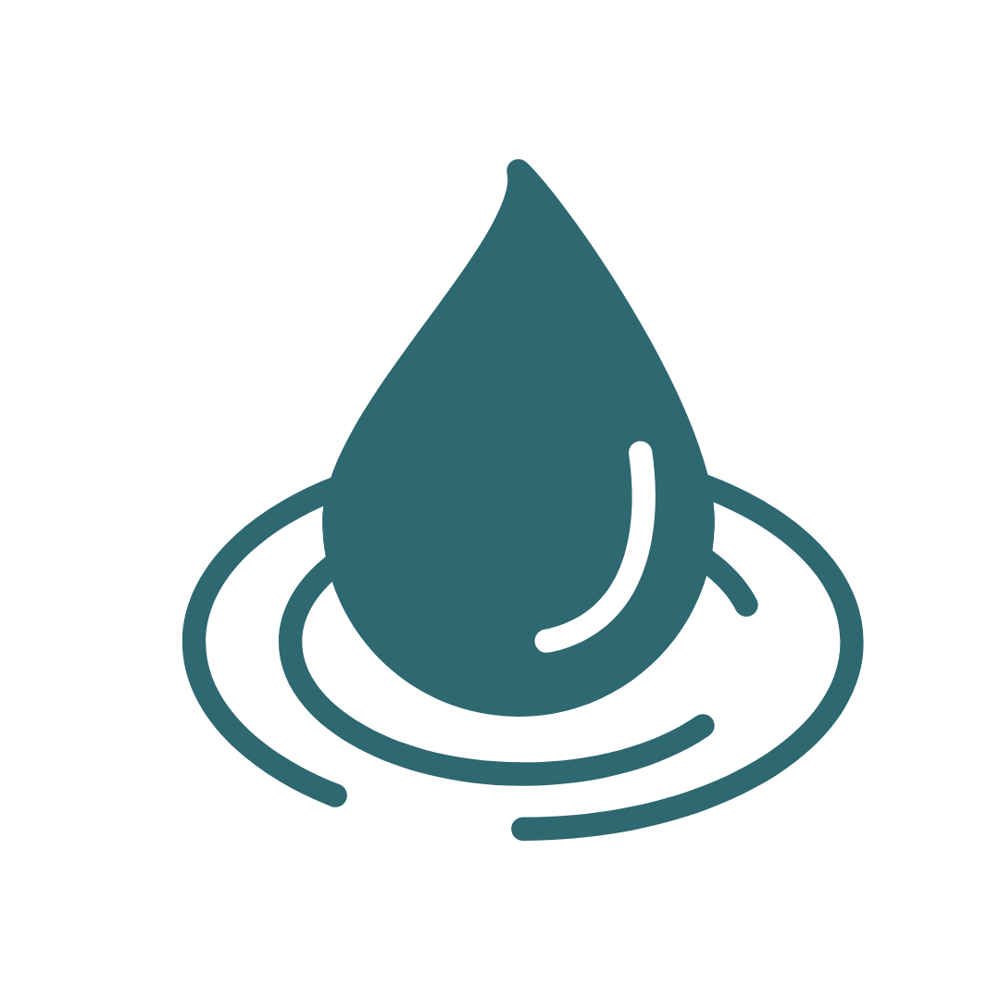
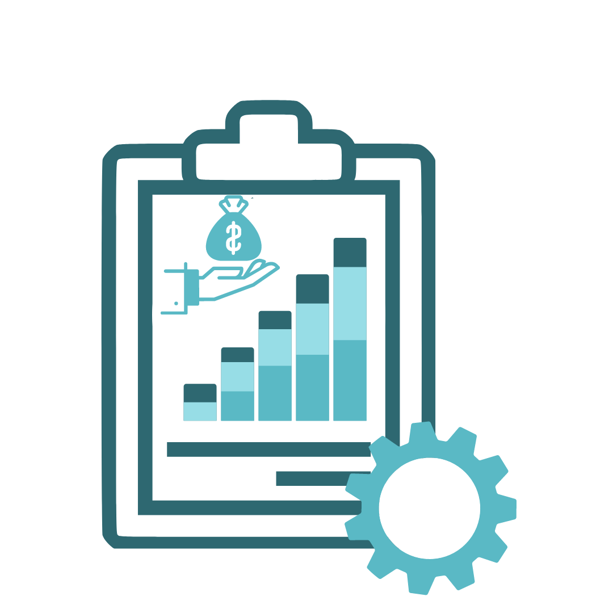
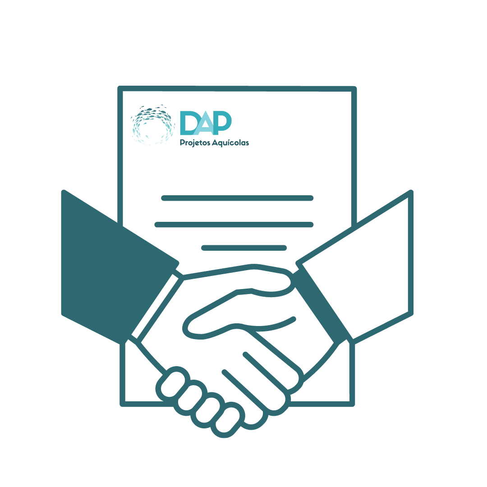
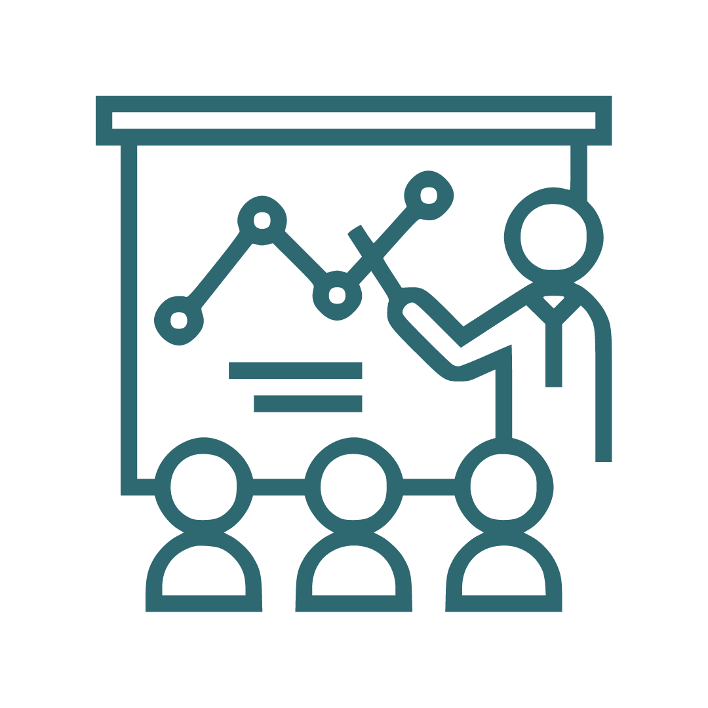

Elaboração de Projeto
- Dimensionamento de unidades produtivas
- Sistema de aeração
- Sistema de abastecimento
- Sistema de drenagem

Projeto Operacional
- Preparação das unidades produtivas
- Monitoramento da qualidade da água
- Manejo Alimentar

Balanço Iônico
- Avaliação da fonte de água disponível
- Protocolo para ajuste iônico

Viabilidade Econômica
- Investimento
- Estimativa de recieta anual
- Custos (Fixos e Variáveis)
- Indicadores de rentabilidade
- Pay-back (Estimativa de retorno)

Assitência Técnica
- Visita técnica
- Protocolos de produção
- Acompanhamento do cultivo

Treinamentos e Palestras
- Aulas tepricas
- Aulas práticas
Contatos